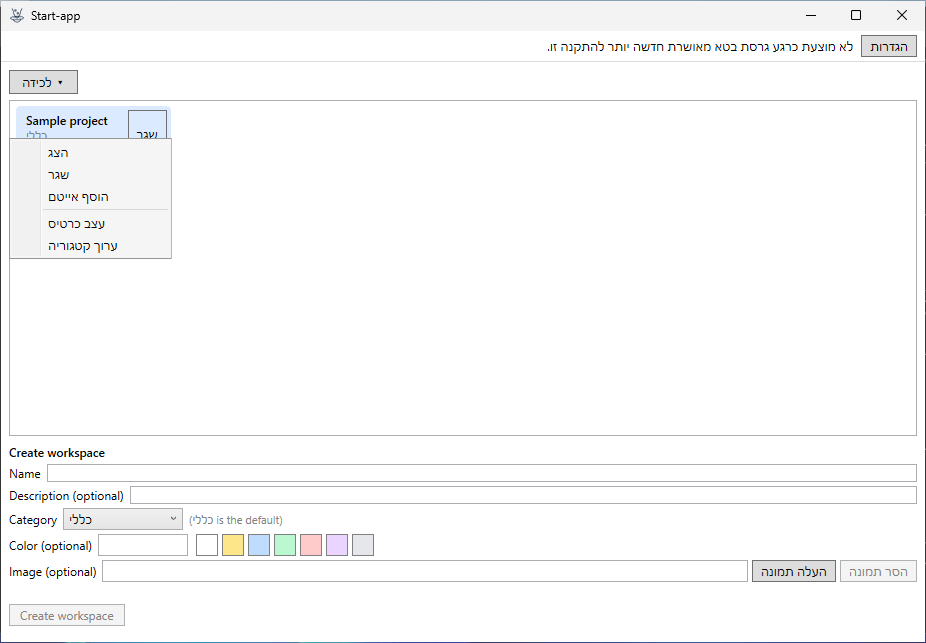
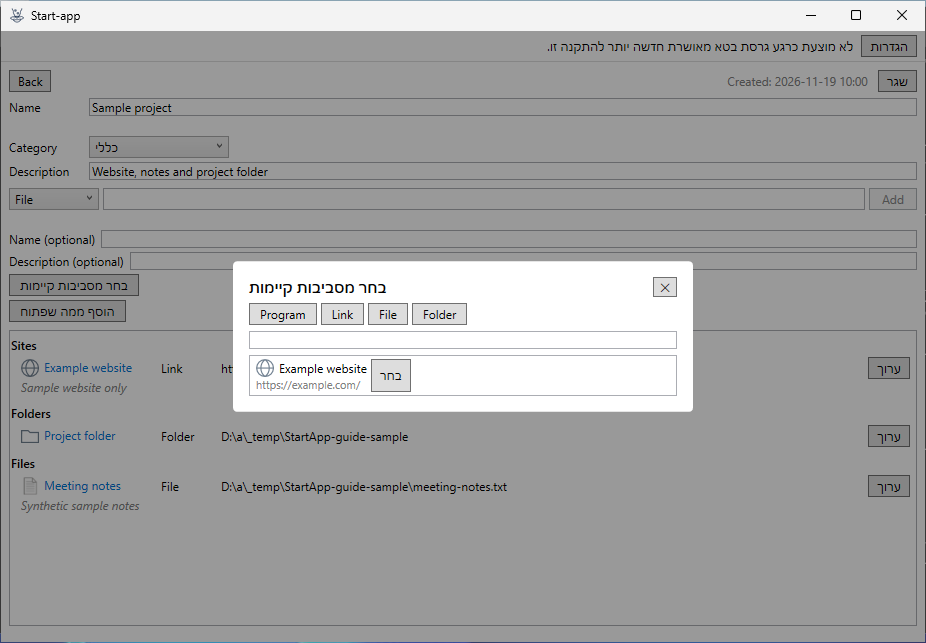
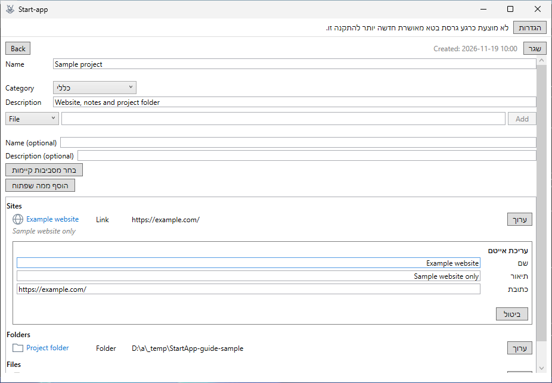
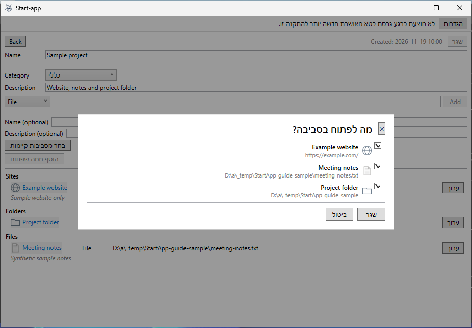

ユーザーガイド
ガイド Start-app
バージョン 0.1.0-proto.2 でのステップバイステップ: ワークスペースの作成、項目の追加、キャプチャ、起動、保存。実際のアプリのスクリーンショットと、知っておくべき制限事項付き。
評価用プロトタイプであり、安定版ではありません
ガイドのバージョン: 0.1.0-proto.2
エピソードは見つかりませんでした。別の単語を試すか、検索をクリアしてください。
それは何ですか Start-app
Start-app プログラム、フォルダー、ファイル、リンクを 1 つの環境名で保存します。次回コンピュータを開くとき、「ファイル名を指定して実行」コマンドを実行すると、各項目を再度選択することなく、すべての項目がまとめて開きます。
このガイドはバージョン 0.1.0-proto.2 を説明し、全体的な流れを案内します: メイン画面、ワークスペースの作成、手動またはキャプチャによる項目の追加、編集、起動、保存。章 既知の制限事項 アプリケーションが実行しないすべてのことを 1 か所に集中化します。
システムとインストールの要件
パッケージ化対象は Windows x64 です。検証済みの Mac または Linux バージョンはありません。
このガイドが説明するバージョン 0.1.0-proto.2 のダウンロードは ホームページのバージョン一覧にあります。バージョン番号、ファイルサイズ、インストール前確認用の sha256 が記載されています。ダウンロードはそこからのみで、ガイドページからは行いません。
ダウンロード後のアクティベーション
ダウンロードはインストーラーではなく ZIP ファイルです。ダウンロード後:
- ZIP からすべてのファイルをフォルダーに抽出します。
- 実行:
Start-app.exeメインフォルダ内。 - フォルダを
Appファイルの横に残し、常にフォルダ全体を一緒に移動してください。
アプリケーションにはランタイム環境が含まれているため、.NET を個別にインストールする必要はありません。登録、アカウント、ログインは必要ありません。データはローカル ファイルに保存されます。%LOCALAPPDATA%\StartApp\store.json.
テスト内容: このプロトタイプはスタンドアロン Windows x64 アプリケーションとして構築され、ホストされた Windows Server 2025 サーバー上で正常に起動およびシャットダウンされました。家庭用 Windows 11 では独自にテストされておらず、Windows の最小バージョンの保証もありません。セキュリティ警告やウイルス対策ソフトウェアの警告が表示されないという保証はありません。
バージョン更新
更新チェックはアプリの設定画面から行い、承認済みバージョンのみが提案されます。ダウンロードは公式サイトから、インストールは手動です: 自動更新はありません。

メイン画面: 環境ビュー
画面上部には環境の一覧があります。各環境カードには、名前、説明、カテゴリ、選択したカードの色と画像、作成日時、最終オープン日時が表示されます。最終オープン日時は、個別のアイテムを開いたときではなく、環境を起動したときに更新されます。
各カードには隣接する「起動」ボタンがあります。カードを右クリックするか、キーボードで Shift+F10 を押すと操作メニューが開きます: 表示、起動、項目を追加、カードをデザイン、カテゴリを編集。リストの下には新しいワークスペースの作成フォームがあり、隅にキャプチャ画面への入口があります。


新しい作業環境の構築
作成フォームでは名前が必須項目です。デフォルトのカテゴリは「一般」で、色とカード画像を選択できます。説明は任意項目です。
項目を手動で追加する
環境詳細画面では、サイト、ファイル、フォルダー、ソフトウェアの4種類の項目を追加します。各項目には独自の名前と説明を付けることができます。ローカル パスには、短いソフトウェア エイリアスではなく、完全な Windows パスが必要です。
項目は種類ごとに画面にグループ化されます: サイト、フォルダ、ファイル、プログラム。各行には隣接する「編集」ボタンがあります。

「既存のワークスペースを選択」ボタンは、別のワークスペースに保存済みの項目をワークスペースに追加します: 種類を選び、検索して選択します。

キャプチャ: スキャン、選択、複製
キャプチャでは、プログラム、Windows ファイル エクスプローラー、ブラウザーのアドレス バーなど、現在開いているものをスキャンします。ブラウザのソースは Chrome、Edge、Brave を認識します。現在、各ブラウザとバージョンの完全な互換性マトリックスはありません。スキャンには最大 10 秒かかる場合があります。
キャプチャから新しいワークスペースを作成すると、見つかった項目がデフォルトでチェックされ、チェックした項目のみがワークスペースに追加されます。

既存のワークスペースに追加する場合、追加項目は保存済み項目と並べて Added, not saved yet のマーク付きで表示されます。「保存」をクリックするまで何も保存されません。

ワークスペースに既にある単一の項目をドラッグすると、そのドラッグに対して個別の確認が表示されます: 別のインスタンスとして再度追加しますか? 一括追加（「すべて追加」または「選択を追加」）では、選択した項目のみが追加されます。何も選択されていない場合はすべてが追加されます。重複していない項目はすぐに画面に追加され、重複はすべて 1 つのグループ化された選択ダイアログに集められ、追加するものをチェックします。
完全な重複防止はありません: 同じ項目は、すでにワークスペースに保存されていても、複数回追加できます。保存前にリストを確認することをお勧めします。
編集環境とアイテム
ワークスペースカードの右クリックメニュー: 表示、起動、項目を追加、カードをデザイン、カテゴリを編集。
カードのデザインでは色と背景画像を選択します。
項目の横の「編集」をクリックすると、名前、説明、アドレスのインラインエディタが開きます。「キャンセル」は変更せずにエディタを閉じます。

変更は明示的な保存の後にのみ保存されます。詳細は章 保存とローカルストレージ.
環境を起動し、開く前にテストする
「起動」コマンドはまず選択ウィンドウ「ワークスペースで何を開きますか?」を開きます: すべての項目がデフォルトでチェックされ、開きたくないもののチェックを外せます。「キャンセル」は何も開かずにウィンドウを閉じます。

チェックによって項目が既に開いていると確実に識別された場合、再度開くかどうかの選択が表示されます。これらの項目はデフォルトでチェックされていません。再度開きたい項目だけをチェックします。選択に戻るか、キャンセルできます。検出が不確実でも、項目が閉じている証拠にはなりません。開いた結果では、リクエスト送信、スキップ、失敗、再度開かない選択を区別します。リクエスト送信はウィンドウが開いた確認ではありません。
リンクは http/https のみで開き、プログラムには完全なパスが必要です。
確認後、アプリは Windows に各項目を開くリクエストを送信します。リクエスト送信は、目的のウィンドウが実際に開いた証拠ではありません。保存されたパスで見つからなかった項目はスキップされ、保存されたパスで見つからなかった旨の説明と、パスを確認して再試行する提案が表示されます。「既に開いている」チェックは部分的です: 確実に開いていると識別された項目のみが再度開く選択肢として表示され、チェックが判断できない場合、再度開くと重複が生じる可能性があります。
既知の制限事項
- ソフトウェア内で開かれたドキュメントを自動的に識別する機能はありません。開いているソフトウェアは、そのソフトウェアで特定のファイルが開かれたという証拠ではありません。ドキュメントは手動で追加されます。
- 保存されていないコンテンツやウィンドウの配置が回復される保証はありません。
- 「既に開いている」チェックは部分的です: 確実な検出では再度開く選択肢が表示されます。確実でない場合、再度開くと重複が生じる可能性があります。
- 部分的なキャプチャ結果または空のリストは、開いているものが何もないことを意味するわけではありません。
- 保存済み項目と新規項目の間に完全な重複防止はありません。
- インターフェイスには環境の削除操作はありません。環境全体を削除することはできませんが、環境から項目を削除することはできます。
- 自動更新はありません。承認済みバージョンのチェックは設定画面で利用でき、インストールは公式サイトから手動で行います。
- ドライブのルートやネットワーク共有のルートへのパスは、手動追加でもキャプチャでもフォルダの対象としてサポートされていません。通常のサブフォルダへのパスはサポートされています。
保存とローカルストレージ
現在のプロジェクト設計では、ワークスペースは、コンピューター上のローカル ファイルに保存されます。 %LOCALAPPDATA%\StartApp\store.json. 変更は明示的に「保存」をクリックした場合にのみ保存されます。
プライバシーを一言で言うと
現在の設計では、環境のデータはコンピューター上にローカルに保存されます。リンクまたはソフトウェアを開くと、その宛先での通常のコミュニケーションが作成されます。たとえば、ブラウザで Web サイトを開くと、その Web サイトにアクセスします。
このサイト自体には、フォーム、分析、リモート フォント、またはサードパーティのサービスは含まれません。
よくある質問
何 Start-app やってる？
プログラム、フォルダー、ファイル、リンクを 1 つの環境名で保存し、「実行」コマンドでまとめて開きます。
開いているものはすべて元の状態に戻りますか?
保証されていません。プログラム内で開かれているドキュメントの自動キャプチャ、保存されていないコンテンツの回復、またはウィンドウの配置の約束はありません。オープニングはオペレーティング システムへのリクエストであり、事前チェックとレポートが行われます。
ソフトウェアで開いているドキュメントを追加するにはどうすればよいですか?
手動: ファイル自体を環境の詳細のファイル タイプ項目として追加します。オープンソフトウェアからはキャプチャ自体が認識しません。
情報はどこに保存されますか?
コンピューター上のローカル ファイルにあります。詳細は章で 保存とローカルストレージ.